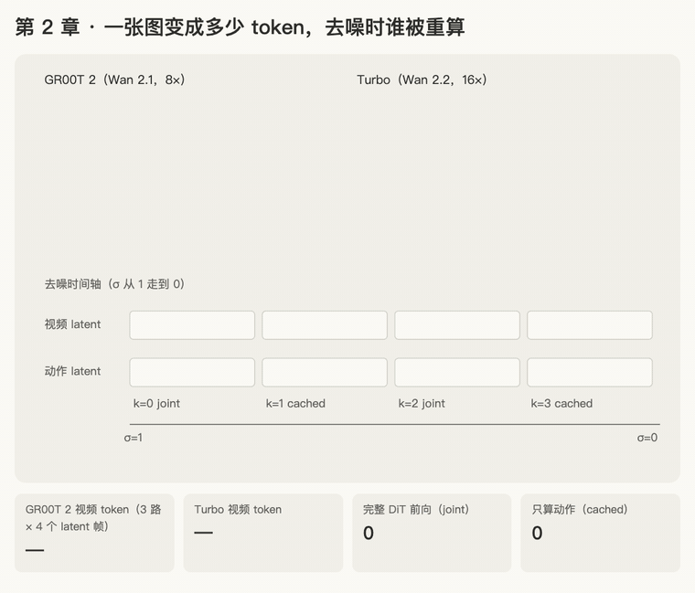

第 2 章 · 架构：一条序列里同时画视频、出动作
本章回答：GR00T 2 具体怎么把多路相机、状态、语言、动作塞进一个 2B Transformer？动作 token 怎么"看着未来"？Turbo 又砍掉了什么？
讲解日期：2026-11-15 · 上一章：第 1 章 什么是 WAM · 下一章：第 3 章 三阶段预训练
对应原文：materials/text/gr00t2-whitepaper.txt§2 L257–L333；附录 F.1.1 L5108–L5160（去噪事件）；附录 I.1 L6940–L6948（部署设定）；底座配置见nvidia-cosmos3/materials/text/lineage/cosmos-predict2.5-transfer2.5-world-simulation.txtTable 3、§3.2
本章缩写：DiT = Diffusion Transformer（扩散 / Transformer）；VAE = Variational AutoEncoder（变分 / 自编码器）；MLP = Multi-Layer Perceptron（多层 / 感知机）；K/V = Key / Value（键 / 值）；FFN = Feed-Forward Network（前馈 / 网络）；AdaLN = Adaptive Layer Normalization（自适应 / 层 / 归一化）；RoPE = Rotary Position Embedding（旋转 / 位置 / 编码）；fps = frames per second（每秒帧数）。全部缩写见 附录 · 缩写与术语表
讲解
第一步：从一张图片到 280 个 token（2026-11-15）
类比：把照片先缩印、再剪成邮票。 VAE 像复印机的缩印功能：224×320 的照片缩成很小的"浓缩图"，信息还在但像素少了；patch 化像把浓缩图剪成一张张邮票，每张邮票就是一个 token。
公式。 设图像高 \(H_{img}\)、宽 \(W_{img}\)，VAE 空间压缩倍数 \(r\)，patch 边长 \(p\)：
时间方向上，Wan 系列是因果 VAE：第 1 帧单独编码，之后每 4 帧压成 1 个 latent 帧，所以 \(T\) 帧视频得到 \(1+\frac{T-1}{4}\) 个 latent 帧（Cosmos-Predict2.5 报告：93 帧 → 24 个 latent 帧，\(1+92/4=24\)）。
| 符号 | 读法 | 意思 |
|---|---|---|
| \(r\) | "r" | VAE 空间压缩倍数（r = ratio）。GR00T 2 用 Wan 2.1，\(r=8\)；Turbo 用 Wan 2.2，\(r=16\) |
| \(p\) | "p" | patch 边长。底座 Cosmos-Predict2.5 用 1×2×2 patch，\(p=2\) |
| \(T\) | "T" | 原始视频帧数 |
例子（GR00T 2 的真实设定）。
| 步骤 | GR00T 2 | Turbo |
|---|---|---|
| 原图 | 224 × 320 | 224 × 320 |
| VAE 后（÷ \(r\)） | 28 × 40 | 14 × 20 |
| patch 后（÷ 2） | 14 × 20 = 280 token | 7 × 10 = 70 token |
| 历史：0.8 s @ 5 fps = 5 帧 → latent 帧 | \(1+4/4=2\) | 2 |
白皮书原文给的是"280 tokens per latent frame and camera at 224 × 320"（L271–L272）和"five history frames per camera"（L6940），以及 Turbo 的"4× smaller spatial latent grid"（L328–L329）；14×20、7×10 和 2 个 latent 帧是按 \(r\)、\(p\)、因果 VAE 规则推算的，与原文数字吻合。
一句话：一路相机一个 latent 帧 = 280 个 token（Turbo 70 个）；视频 token 的多少由 VAE 压缩倍数决定。
第二步：四类输入怎么进一个 Transformer（2026-11-15）
类比：一个会议室，四种来宾，各有翻译。 会议室（2B DiT）里只说一种"内部语言"（宽度 2048 的向量）。视频来宾带 VAE 翻译；状态和动作来宾按国籍（本体）各配一个小翻译（MLP）；语言来宾不进会议室，坐在旁听席，会议室里的人随时可以回头问它（cross-attention）。
| 输入 | 编码器 | 是否训练 | 怎么接入 Transformer | 原文 |
|---|---|---|---|---|
| 多路相机视频 | Wan 2.1 VAE（4× 时间、8× 空间）+ patch | VAE 冻结 | 作为序列里的 token；加可学的相机编号 embedding 区分哪路相机；过去帧当上下文、未来帧被生成 | L270–L273 |
| 语言指令 | Cosmos-Reason1（VLM） | 冻结 | cross-attention 读入，不占主序列 | L274–L275 |
| 机器人状态 | 每本体一个小 MLP | 训练 | 映射到 Transformer 宽度，进主序列 | L276–L277 |
| 带噪动作块 | 每本体一个小 MLP（进）+ 每本体一个解码器（出） | 训练 | 进主序列；输出 token 经解码器还原成动作 | L276–L277 |
主干的尺寸（底座 Cosmos-Predict2.5-2B，Table 3；GR00T 2 正文没另给，按初始化推定沿用）：32 层、宽度 2048、16 个注意力头 × 每头 128 维、FFN 隐层 8192、GELU 激活、3D RoPE 位置编码、AdaLN-LoRA 维度 256（用噪声水平调制每层归一化）。每层是 self-attention → cross-attention（读文本）→ FFN。
注意力规则（L278–L280）：
| 谁看谁 | 是否 |
|---|---|
| 视频 token ↔ 视频 token（跨时间、跨相机） | ✓ |
| 动作 token → 所有视频 token，包括正在生成的未来帧 | ✓ |
| 所有 token → 文本（cross-attention） | ✓ |
一句话：视频、状态、动作在同一条序列里做 self-attention，语言走 cross-attention；只有每本体的小 MLP 是"本体专属"的，主干全部共享。
第三步：flow matching，视频和动作一起去噪（2026-11-15）
类比：雾里同时找两条路。 第 1 章说的"想象未来"和"出动作"不是先后两步，而是在同一场雾里一起往前走：每走一步，视频那条路清楚一点，动作那条路也清楚一点，而且动作那条路一直参考视频那条路当前的样子。
公式。 用 \(x_0\) 表示干净数据、\(\epsilon\sim\mathcal N(0,I)\) 表示噪声、\(\sigma\in[0,1]\) 是噪声水平（读作 sigma，1 = 纯噪声、0 = 干净）：
模型 \(v_\theta\) 预测速度；训练 loss 是视频一项 + 动作一项（L280–L281）。推理时从 \(\sigma=1\) 走到 \(\sigma=0\)，每步
由同一组式子还能直接算出"模型眼中的干净数据" \(\hat x_0=x_\sigma-\sigma v_\theta\)（附录 F 式 (10)）。
例子（编的一维数）。 \(x_0=2\)，\(\epsilon=-1\)，\(\sigma=0.5\)：
| 量 | 计算 | 值 |
|---|---|---|
| 带噪样本 \(x_{0.5}\) | \(0.5\times2+0.5\times(-1)\) | 0.5 |
| 目标速度 \(v^*\) | \(-1-2\) | −3 |
| 若模型预测准，一步走到 \(\sigma=0\) | \(0.5-0.5\times(-3)\) | 2 ✓ |
| 用式 (10) 估干净值 | \(0.5-0.5\times(-3)\) | 2 ✓ |
部署只用几步：视频 1–2 步、动作 2–4 步（L281–L282）。记法 "2v4a" = 2 步视频 + 4 步动作（L6942–L6943）；Dexter 用 2v2a，YAM 用 2v4a，G1 的 Turbo 从 2v4a 降到 1v2a（L6943–L6944）。
省算力的结构：joint pass 和 cached pass（附录 F.1.1，Fig. 46）。以 4 次动作去噪为例：
| 去噪事件 \(k\) | 类型 | 做什么 |
|---|---|---|
| 0 | joint | 视频 + 动作一起过 DiT，更新两者 |
| 1 | cached | 只更新动作，复用第 0 次视频/状态的 K/V |
| 2 | joint | 视频 + 动作一起过 DiT |
| 3 | cached | 只更新动作，复用第 2 次的 K/V |
视频只算 2 次、动作算 4 次，这就是 "2v4a"。cached pass 很便宜，因为几千个视频 token 不用重算。
一句话：视频和动作用同一个 flow matching 目标一起去噪，动作多走几步、复用视频的 K/V。
第四步：GR00T 2 Turbo——只换 VAE（2026-11-15）
类比：同一个画家，换一支更粗的笔。 画家（2B Transformer）不变，粗笔（压缩更狠的 VAE）一笔盖住更大一块，画得快，但细节（手指、螺丝）画不清。
改了什么（L327–L329）：只把 Wan 2.1 VAE（8×）换成 Wan 2.2 VAE（16×），latent 输入/输出投影跟着改，动作块长度不变。
例子：token 和速度、精度的账。
| GR00T 2 | Turbo | 出处 | |
|---|---|---|---|
| 每路每 latent 帧 token | 280 | 70 | 第一步推算 |
| YAM V2 真机 Elo | 统计上分不出 | 同左 | L1091–L1092 |
| RTX 5090 单次服务调用（YAM） | 171 ms | 52 ms | L1092–L1093 |
| 后训练 YAM 平均成功率 | 71.7% | 65.0% | Tab. 1a |
| 后训练灵巧手平均成功率 | 68.6% | 34.3% | Tab. 1b |
夹爪任务几乎不掉，灵巧手任务掉一半——"需要预测多少视觉细节，取决于任务和本体"（§5 L1636–L1639 的解读，作者说这个对比没有隔离原因）。
一句话：Turbo 只换了更狠的 VAE，视频 token 少 4 倍、快约 3 倍，代价落在需要看清手指的灵巧任务上。
动画演示：一张图变成多少 token，去噪时谁被重算

可交互版：animations/02-token-flow.html（▶ 播放、→ 单步、↺ 从头开始；去噪配置按钮：2v4a（YAM）/ 2v2a（Dexter）/ 1v2a（G1 Turbo））
怎么看： 1. 前三步：原图 → VAE 网格 → 2×2 patch，左 GR00T 2 得 280、右 Turbo 得 70（第一步）。 2. 第四步：3 路 × 4 个 latent 帧，视频 token 3,360 对 840（第四步的代价账）。 3. 下方时间轴：joint 事件视频和动作一起亮；cached 事件视频格变成虚线"复用 K/V"，只有动作被重算（第三步）。
练习与作答记录
题 1（第一步 token 数）：如果相机分辨率改成 448 × 640，其他不变，GR00T 2 每路每 latent 帧多少 token？Turbo 呢？
作答：（待作答）
题 2（第二步 接入方式）：为什么语言走 cross-attention 而不进主序列，对一个要实时跑、指令一集里基本不变的机器人策略有什么好处？（提示：想想第 10 章会讲的"指令不变时复用文本特征"。）
作答：（待作答）
题 3（第三步 去噪）：用第三步的一维例子，若 \(\sigma=0.8\)、\(x_0=2\)、\(\epsilon=-1\)，带噪样本和目标速度各是多少？用式 (10) 估干净值是否还等于 2？
作答：（待作答）
题 4（第四步 Turbo）："2v4a → 1v2a"大约省掉哪几次 DiT 前向？哪类前向最贵？
作答：（待作答）
口诀
缩印剪票二百八，粗笔一换剩七十；
视频动作同一列，语言旁听交叉看；
两步画面四步手，缓存键值省大头。
本章复习卡片
G04、G05、G06（练习做完后，按答错、卡住的地方再补。）
附录 · 延伸阅读
推荐阅读
| 读什么 | 读哪里 | 读它为了什么 |
|---|---|---|
| ★ GR00T 2 白皮书 | §2 L257–L333 | 本章原文 |
| ★ Cosmos-Predict2.5 报告 | §3.2 Network Architecture、Table 3（nvidia-cosmos3/materials/text/lineage/…world-simulation.txt 约 L470–L520） |
底座 DiT 的层数、宽度、VAE、patch、文本编码 |
| GR00T 2 白皮书 | 附录 F.1.1 Fig. 46（L5108 起） | joint / cached 去噪事件 |
| GR00T 2 白皮书 | 附录 I.1 Tab. 27 前后（L6940–L6990） | 各本体的相机数、动作块长、去噪步数 |
diffusion-models 讲义 |
Flow Matching 章 | 速度场、Euler 积分的推导 |
数学原理
- 因果视频 VAE 的时间压缩：首帧单独、之后每 \(k\) 帧一组，\(T\) 帧 → \(1+(T-1)/k\) 个 latent 帧。
- Rectified flow / flow matching：线性插值路径 + 回归常速度 \(\epsilon-x_0\)，推理用 Euler 法反向积分。
- K/V 缓存：attention 里被看的一方（视频）不变时，它的 Key、Value 可以复用，只重算查询方（动作）。
公式清单
| 公式 | 意思 |
|---|---|
| \(N_{\text{tok}}=\frac{H_{img}}{rp}\cdot\frac{W_{img}}{rp}\) | 每路每 latent 帧 token 数 |
| \(1+(T-1)/4\) | 因果 VAE 把 \(T\) 帧压成的 latent 帧数 |
| \(x_\sigma=(1-\sigma)x_0+\sigma\epsilon\)，\(v^*=\epsilon-x_0\) | flow matching 的插值和目标速度 |
| \(x_{\sigma-\Delta}=x_\sigma-\Delta v_\theta\) | Euler 去噪一步 |
| \(\hat x_0=x_\sigma-\sigma v_\theta\)，\(\hat\epsilon=x_\sigma+(1-\sigma)v_\theta\) | 附录 F 式 (10) |
代码对照
本章暂无代码对照：官方代码 2026-12 发布后，按 templates/lesson-book.md 第四节补 solutions/chapter-code/ch02_architecture.py（token 数、去噪一步的数字核对）。